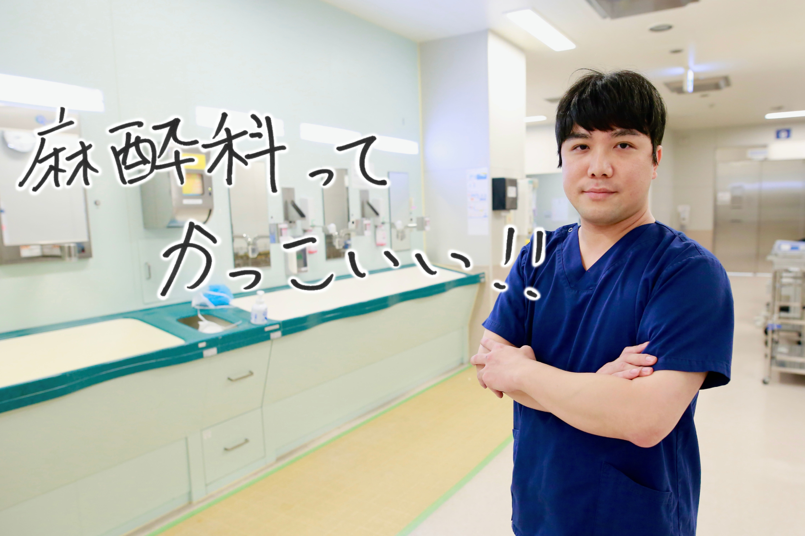
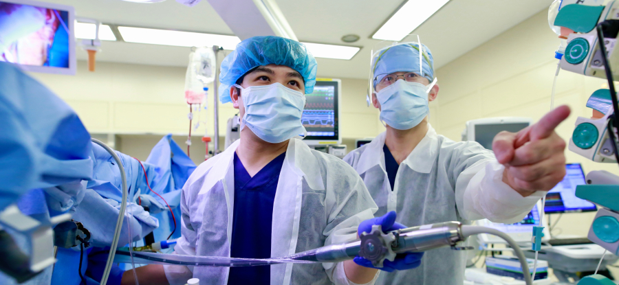
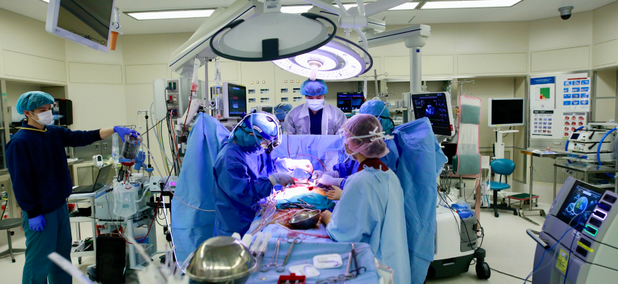

麻酔科医
Anesthesiologist もどる
もどる


■当院でやりがいを感じること
小倉記念病院のイメージ通り、心臓血管外科(弁膜症・CABG・大血管・MICS他)や循環器内科（TAVI・MitraClip・TriClip・WATCHMAN・AMPLATZER他）の症例を日々数多く経験できます。TEE担当の臨床検査技師より術中にご指導を頂けます。上記症例は基本２名体制で麻酔を行いますので、丁寧な指導を受けながら実践を積む事ができます。指導医からは麻酔中のフィードバックはもとより、術後に麻酔科控え室での麻酔の振り返りを通して、アドバイスやレクチャーを頂けます（好きなだけ！∞）。全国各地から心外麻酔を学びに来た仲間達や、さまざまな上級医の先生方とたくさん語り合うことで、とても有意義な日々を送ることができ、毎日の成長をとても実感できています。

■入職希望者へのメッセージ
「相談しやすい環境」です。来てよかったです。当科では、麻酔症例は個々人の目標や意欲に応じて割り当てられます。「心外・循環器系の麻酔をガッツリ学びたい人」も「むしろ全く心外麻酔を行いたくない人」でも適した職場環境となっています。心外麻酔では症例毎に難易度を設定しており、ほとんど０から心外麻酔を始めた私にも、力量に合わせて症例を週に２件程度割り振って頂き、成長する機会を得ることができました。心臓麻酔という枠にとらわれず、心臓麻酔で身につけた麻酔管理・循環管理の考え方を非心臓手術にも応用し、麻酔科医としての総合力の向上に努めます。脳神経外科も活発で、腫瘍と脳血管の両方の麻酔経験を積めます。MEPやSEPをはじめとした術中神経モニタリングを麻酔科で行っています。また、ICU当直を通して院内急変対応や術後管理、重症患者管理も学べます。